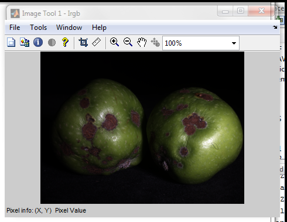
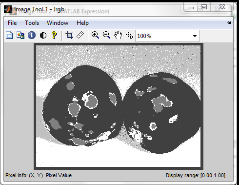
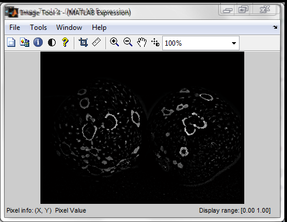
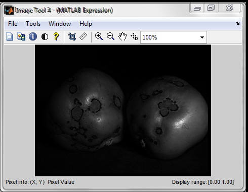
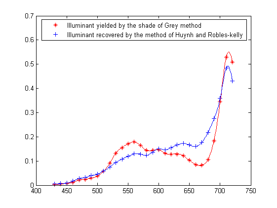
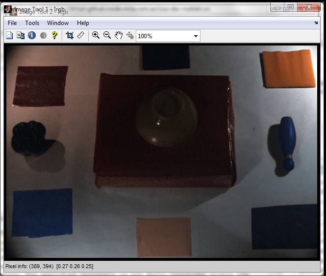
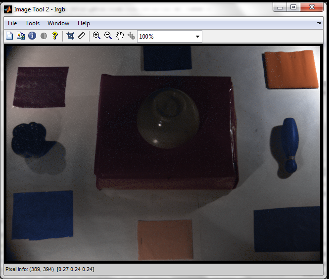
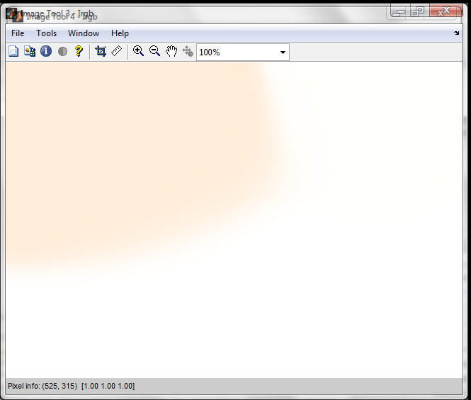
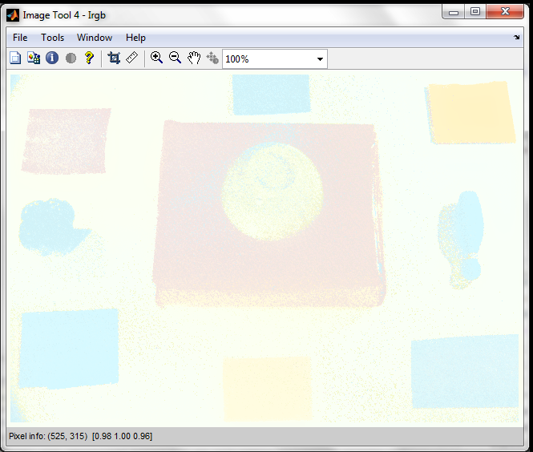
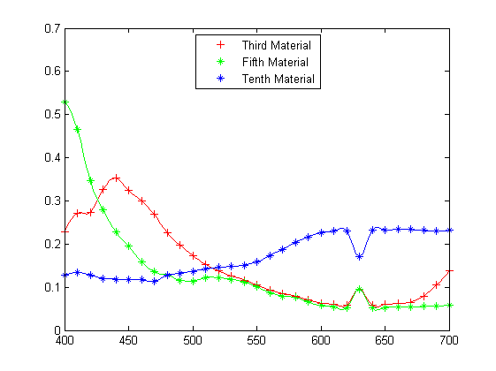

Sample Code
Here, we illustrate how to process hyperspectral imagery with S cyllarus and some of the options available on our Matlab toolbox. To do this, we commence by reading an HSZ (hyperspectral zipped) file from disk, convert it into a flat (FLA) image and show it in pseudoculour using imtool
I = FLAread('.\shared\samples\apples_small.fla');
Irgb = recover_RGBImage(I);
imtool(Irgb);

With the image in hand, we proceed to read SLZ files (spectra library file) containing canonical illuminants and endmember spectra and process the FLA using Scyllarus with material indexation and spectra represented as Gaussian mixtures and NURBS. Here, we have used the capacity of Scyllarus to limit the materials in the scene to 4. Once the HSZ is computed, the material map can be visualised using imtool as follows.
CanonicalIlluminants = SLZread('ISSAlluminants9.slz'); Endmembers = SLZread('ISSA72.slz'); options=struct('MaterialIndexed',1,'IlluminantIndexed',1,'maxnumMaterials', 4,... 'numMaterials',3, 'MaterialEncoding', 'GMM', 'SpecularityEncoding', 'GMM',... 'IlluminantEncoding', 'NURBS'); HSZ=Scyllarus(I, options, Endmembers, CanonicalIlluminants); imtool(HSZ.S.ElementAbundanceIndexes(:,:,1)/max(max(max(HSZ.S.ElementAbundanceIndexes))));
We now write the HSZ file to disk using a medium level of compression and 8-bit unsigned integers. We also display the specular highlights and shading using imtool.
save_options.compression = 5; save_options.datatype = 'uint8'; HSZwrite('.\shared\samples\apples_samples.hsz', HSZ, save_options); imtool(HSZ.K.Factor/max(max(HSZ.K.Factor))); imtool(HSZ.S.Factor/max(max(HSZ.S.Factor))); 
And recover the global illuminant using both, the shade of grey and the method of Huynh and Robles-Kelly. We then plot both with respect to wavelenght using different markers and a second degree spline curve (NURBS) resampled at 1nm intervals
options.method = 'SG'; L1 = recover_global_illuminant(I.I, options); L2 = recover_global_illuminant(I.I); bands = length(I.HDR.wavelength); [KNOTS, CP_REF, CP_WAVE] = get_nurbs(reshape(L1,1,1,bands),reshape(I.HDR.wavelength,1,1,bands), 2); [L_new1, wavelength_new1] = eval_nurbs(KNOTS,... [min(I.HDR.wavelength(1)):1:max(I.HDR.wavelength)], CP_REF, CP_WAVE, 2); [KNOTS, CP_REF, CP_WAVE] = get_nurbs(reshape(L2,1,1,bands),reshape(I.HDR.wavelength,1,1,bands), 2); [L_new2, wavelength_new2] = eval_nurbs(KNOTS,... [min(I.HDR.wavelength(1)):1:max(I.HDR.wavelength)], CP_REF, CP_WAVE, 2); bands_new = length(wavelength_new1); plot(I.HDR.wavelength, L1,'*r',I.HDR.wavelength, L2,'+b'); legend({'Illuminant yielded by the shade of Grey method';... 'Illuminant recovered by the method of Huynh and Robles-kelly'},'Location','North'); hold on; plot(wavelength_new1,reshape(L_new1,1,bands_new),'r',wavelength_new2,reshape(L_new2,1,bands_new),'b');
Now we open another multispectral image in HSZ format and crop it. We reprocess the HSZ file using Scyllarus with RAW encoding and multiple illuminants in the scene. Here, the illuminant is computed using the shade of grey method ('SG'). The HSZ can be displayed in pseudocolour using recover_RGBimage and imtool. Below, the input image is displayed on the left-hand panel while image without the lluminant contribution is shown on the right-hand panel.
HSZ = HSZread('.\shared\samples\scene1_on_red_pink.hsz',[33 34 644 444]); options=struct('MaterialIndexed',1,'SpecularityIndexed',0,'MaterialEncoding',... 'RAW', 'SpecularityEncoding', 'RAW', 'IlluminantEncoding', 'RAW','maxnumIlluminants', 7, ... 'numIlluminants',7,'maxnumMaterials', 10, 'numMaterials',5); options.L.method = 'SG'; HSZ=Scyllarus(HSZ,options); Irgb = recover_RGBImage(HSZ); imtool(Irgb); Multi_L = HSZ.L.Elements; HSZ.L.Elements = ones(size(HSZ.L.Elements)); Irgb = recover_RGBImage(HSZ); imtool(Irgb); 
We can also view the illuminant and reflectance colour maps
HSZ.L.Elements = Multi_L; Materials = HSZ.S.Elements; HSZ.S.Elements = ones(size(HSZ.S.Elements)); HSZ.S.Factor = ones(size(HSZ.S.Factor)); HSZ.K.Factor = ones(size(HSZ.K.Factor)); Irgb = recover_RGBImage(HSZ); imtool(Irgb); HSZ.S.Elements = Materials; HSZ.L.Elements = ones(size(HSZ.L.Elements)); Irgb = recover_RGBImage(HSZ); imtool(Irgb); 
Or plot the third, fifth and tenth materials as follows
plot(HSZ.HDR.wavelength, Materials(3,:), '+r', HSZ.HDR.wavelength, ... Materials(5,:), '*g', HSZ.HDR.wavelength, Materials(10,:), '*b'); legend({'Third Material';'Fifth Material';'Tenth Material'},'Location','North'); new_wavelength = min(HSZ.HDR.wavelength):2.5:max(HSZ.HDR.wavelength); [Materials_new1, wavelength_new1] = translate_spectra(Materials(3,:), ... HSZ.HDR.wavelength', new_wavelength); [Materials_new2, wavelength_new2] = translate_spectra(Materials(5,:), ... HSZ.HDR.wavelength', new_wavelength); [Materials_new3, wavelength_new3] = translate_spectra(Materials(10,:), ... HSZ.HDR.wavelength', new_wavelength); hold on; bands_new1 = length(wavelength_new1); bands_new2 = length(wavelength_new2); bands_new3 = length(wavelength_new3); plot(wavelength_new1,reshape(Materials_new1,1,bands_new1),'r',wavelength_new2,... reshape(Materials_new2,1,bands_new2),'g',wavelength_new3, ... reshape(Materials_new3,1,bands_new3),'b');